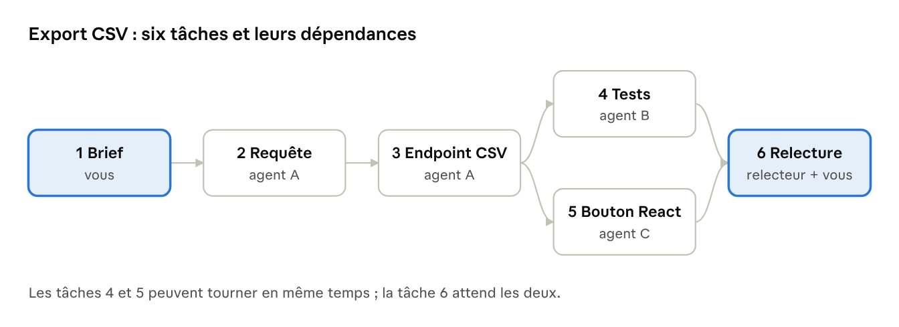
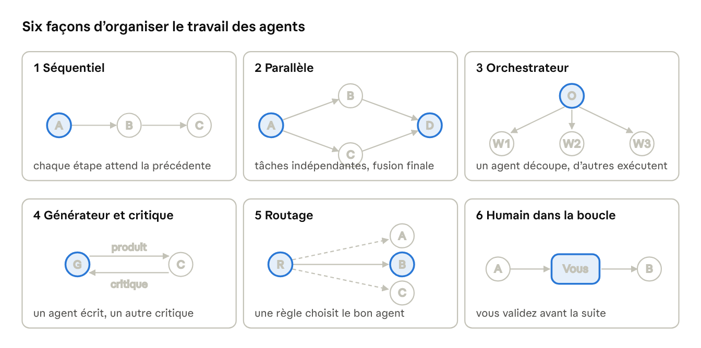
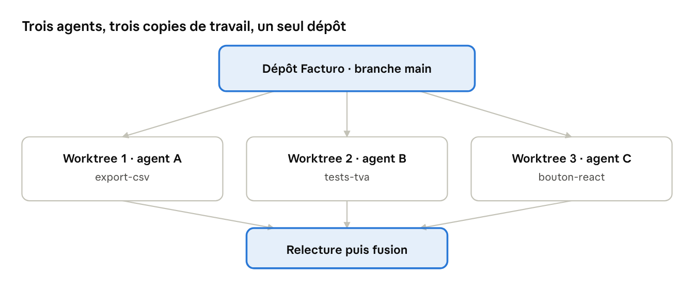
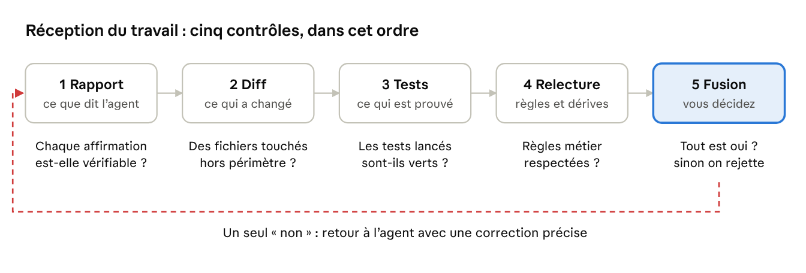

Module 8 : orchestrer des agents
Ce que vous saurez faire
Après ce module, vous saurez confier une tâche à un agent, la découper, la répartir et la recevoir sans vous faire piéger. Le fil rouge est la demande de Marie Giraud : un export CSV des factures pour son cabinet comptable.
- Écrire un brief complet qu'un agent peut exécuter sans vous interroger.
- Découper une demande en tâches avec leurs dépendances.
- Choisir parmi six patterns d'orchestration celui qui convient.
- Faire travailler plusieurs agents en parallèle sans conflit.
- Contrôler un compte rendu en le comparant ligne à ligne au diff.
- Décider ce qu'on délègue et ce qu'on garde.
Prérequis : le module 7 (agent, harnais, boucle, CLAUDE.md, sous-agent). Durée : environ 4 heures, atelier compris. Lien avec Facturo : toutes les tâches portent sur le module Export du monolithe.
Leçon 8.1 : écrire un brief qui se suffit à lui-même
Un brief est la demande écrite que vous donnez à l'agent, et sa qualité fixe la qualité du résultat. L'agent n'a pas votre contexte : il ne sait ni qui est Marie Giraud, ni ce que son comptable attend. Tout ce qui n'est pas écrit sera deviné, et une devinette est une dérive en puissance.
Un bon brief tient en six rubriques : l'objectif, le contexte, le périmètre, les règles à respecter, la preuve attendue et le format du compte rendu. La preuve attendue est la plus oubliée. Elle dit comment l'agent saura qu'il a fini.
Exemple Facturo : le brief de l'export CSV
OBJECTIF
Ajouter un export CSV des factures d'un mois, pour le cabinet
comptable d'un client (Marie Giraud, 12 personnes).
CONTEXTE
Module Export du monolithe. Le comptable ouvre le fichier dans Excel
en version française.
PÉRIMÈTRE
Fichiers autorisés : src/Export/, tests/Export/.
Ne pas toucher : src/Facturation/, la numérotation.
RÈGLES
- Séparateur point-virgule, décimale avec virgule, encodage UTF-8 avec BOM.
- Colonnes : numero, date_emission, client, siret, total_ht,
taux_tva, total_ttc, statut.
- Inclure les factures émises et payées, exclure brouillons et annulées.
- Montants arrondis au centime.
PREUVE ATTENDUE
Tests automatiques sur : colonnes, séparateurs, filtre de statut, arrondi.
Commande : php bin/phpunit tests/Export
COMPTE RENDU
Liste des fichiers modifiés, tests ajoutés, points non traités.Relisez ce brief avec une question : un développeur sans contexte pourrait-il l'exécuter ? Si la réponse est non, l'agent échouera aussi. Remarquez le périmètre : il protège la règle de numérotation, qui n'a rien à voir avec un export.
À retenir
- Un brief porte six rubriques : objectif, contexte, périmètre, règles, preuve, compte rendu.
- La preuve attendue dit à l'agent quand il a fini.
- Ce qui n'est pas écrit sera deviné.
Erreurs fréquentes
- Écrire "fais un export CSV" et laisser l'agent choisir le séparateur.
- Oublier de lister les fichiers interdits.
- Demander "vérifie que ça marche" sans dire comment.
- Joindre trop de contexte inutile qui noie la consigne.
Leçon 8.2 : découper en tâches avec leurs dépendances
Une tâche bien découpée est assez petite pour être relue en dix minutes, et assez complète pour être vérifiée seule. Une tâche trop grosse produit un diff illisible. Une tâche trop petite multiplie les allers-retours.
Une dépendance signifie qu'une tâche a besoin du résultat d'une autre. Les tâches sans dépendance entre elles peuvent tourner en parallèle. Les autres s'enchaînent.
Exemple Facturo : l'export CSV en six tâches
| N° | Tâche | Dépend de | Qui | Vérification |
|---|---|---|---|---|
| 1 | Écrire le brief | rien | Vous | Relu par un tiers |
| 2 | Requête des factures du mois | 1 | Agent A | Test sur 3 factures de démonstration |
| 3 | Endpoint qui produit le CSV | 2 | Agent A | Test de format |
| 4 | Tests de contrat de l'export | 3 | Agent B | Les tests échouent si on casse une colonne |
| 5 | Bouton "Exporter" côté React | 3 | Agent C | Test de composant |
| 6 | Relecture globale | 4 et 5 | Relecteur + vous | Checklist de réception |

Lire le schéma
- Chaque boîte est une tâche ; la flèche signifie "doit être finie avant".
- Les tâches 1, 2 et 3 s'enchaînent : chacune a besoin de la précédente.
- Les tâches 4 et 5 partent toutes deux de la 3 : elles peuvent tourner en même temps.
- La tâche 6 attend les deux et rassemble le tout.
Le chemin le plus long (1, 2, 3, 4 ou 5, 6) fixe la durée minimale. Ajouter un agent n'accélère que les branches parallèles.
Du plan de tâches au ticket
Dans la plupart des équipes, une tâche prend la forme d'un ticket : une fiche courte, rangée dans un outil de suivi ou dans un dossier du dépôt, qui dit ce qu'on attend, comment on saura que c'est fini et ce qui n'est pas concerné. Pour un agent, un ticket est un brief (leçon 8.1) auquel on ajoute un statut : à faire, en cours, en revue, fait. Les trois niveaux (epic, story, tâche) sont présentés à la leçon 11.4.
Pourquoi des tickets plutôt qu'une demande à la volée
Il est tentant de dire à l'agent « fais-moi tout l'export » et de relire le résultat. Cela marche sur un petit script. Cela casse dès que le travail grossit, pour des raisons précises.
| Enjeu | Demande à la volée | Avec des tickets |
|---|---|---|
| Mémoire | Ce qui a été décidé vit dans la fenêtre de contexte (leçon 7.3), qui se dilue et s'efface. | Le ticket est écrit, versionné, relisable par la prochaine session. |
| « Fini » | « Ça a l'air de marcher ». | Les critères disent quand c'est fini (11.4) ; le test rouge les traduit en code (4.4). |
| Relecture | Un diff énorme, relu en diagonale. | Un diff par ticket, relu en dix minutes. |
| Suppositions | Les trous de la consigne sont comblés en silence : c'est une dérive (2.5). | Le périmètre et les interdits sont écrits. |
| Reprise | Une session perdue ou une réponse ratée oblige à tout recommencer. | On relance un seul ticket. |
| Parallélisme | On ne sait pas ce qui peut avancer en même temps. | Les dépendances sont explicites (leçon 8.4). |
Faire écrire les tickets par l'IA, pour l'IA
Un agent rédige vite et sans fatigue des tickets complets. Mais « génère tous les tickets » en un seul message reproduit le problème qu'on voulait éviter : un plan que personne n'a relu. Procédez en deux temps.
- Le plan. Donnez à l'agent les stories (leçon 11.4), les décisions d'architecture (9.6) et le fichier d'instructions (7.4). Demandez seulement la liste : titres, dépendances, taille estimée. Vous relisez : chaque exigence a-t-elle un ticket ? Un ticket est-il inventé ? L'ordre respecte-t-il les dépendances ? Un ticket est-il trop gros ?
- Le détail. Une fois le plan validé, l'agent détaille chaque ticket avec les six rubriques du brief. Vous relisez les critères et le périmètre : c'est là que se cachent les ambiguïtés.
Le découpage est le point de contrôle humain le moins cher : corriger une ligne d'un plan coûte quelques secondes, corriger un module bâti sur un mauvais découpage coûte une journée. L'agent sait décomposer et rédiger. Il ne sait pas ce qui est prioritaire, ce qui est hors périmètre, ni ce que veut le client : cela reste votre rôle. Détaillez seulement le lot en cours, car des tickets écrits trop tôt sont périmés avant d'être pris.
À retenir
- Une tâche se relit en dix minutes et se vérifie seule.
- Une dépendance est un résultat dont une autre tâche a besoin.
- Seules les tâches indépendantes méritent des agents en parallèle.
- Un ticket est un brief avec un statut : il garde les décisions hors de la fenêtre de contexte.
- On fait générer le plan de tickets, on le relit, puis seulement on le détaille.
Erreurs fréquentes
- Lancer en parallèle deux tâches qui modifient les mêmes fichiers.
- Découper par couche technique plutôt que par résultat vérifiable.
- Oublier la tâche de relecture dans le plan.
- Demander tous les tickets d'un coup à l'agent, sans relire le plan.
- Détailler tout le projet avant de commencer : les tickets lointains périment.
- Laisser passer un ticket qui ne répond à aucune exigence.
Leçon 8.3 : les six patterns d'orchestration
Un pattern d'orchestration est une manière éprouvée d'organiser plusieurs agents. Le choix dépend de la tâche : y a-t-il un ordre, des parties indépendantes, un besoin de contrôle ? Commencez toujours par le plus simple, c'est-à-dire un seul agent, et ajoutez de la structure quand un problème réel l'exige.

Lire le schéma
- Les ronds sont des agents, la boîte "Vous" est un humain, les flèches sont des transmissions.
- Séquentiel : A passe son résultat à B, puis à C. Simple, lent, facile à suivre.
- Parallèle : B et C travaillent en même temps, D rassemble.
- Orchestrateur : O découpe et distribue, W1 à W3 exécutent.
- Générateur et critique : G produit, C critique, et le cycle recommence. Routage : une règle envoie la tâche vers le bon agent. Humain dans la boucle : vous validez avant l'étape suivante.
Exemple Facturo : quel pattern pour quel besoin
| Besoin Facturo | Pattern | Pourquoi |
|---|---|---|
| Migrer le schéma, puis adapter le code, puis les tests | Séquentiel | Chaque étape dépend de la précédente |
| Export CSV : tests et bouton React | Parallèle | Deux parties indépendantes après l'endpoint |
| Refactorer cinq modules d'un coup | Orchestrateur et exécutants | Un agent découpe, cinq exécutent |
| Écrire le calcul de TVA | Générateur et critique | Le critique cherche les erreurs d'arrondi |
| Trier les demandes de support (bug, question, évolution) | Routage | Chaque type va vers un agent différent |
| Toute action touchant la base de production | Humain dans la boucle | Irréversible : vous validez |
Les patterns se combinent. Un orchestrateur peut lancer des exécutants en parallèle, chacun contrôlé par un critique, avec vous en validation finale. Chaque couche ajoutée coûte du temps et des jetons ; elle doit prévenir un risque réel.
À retenir
- Six patterns : séquentiel, parallèle, orchestrateur, générateur et critique, routage, humain dans la boucle.
- Commencez par un seul agent ; ajoutez de la structure face à un vrai problème.
- Toute action irréversible passe par un humain.
Erreurs fréquentes
- Monter une armée d'agents pour une tâche de vingt minutes.
- Oublier qu'un orchestrateur peut déléguer de travers : relisez son découpage.
- Utiliser un critique sans lui donner de règles précises à vérifier.
Leçon 8.4 : agents en parallèle sans conflit
Deux agents qui modifient les mêmes fichiers dans le même dossier se marchent dessus. La solution de Git s'appelle le worktree : une copie de travail supplémentaire, rattachée au même dépôt, avec sa propre branche. La documentation de Claude Code parle d'isolation par worktree : chaque agent travaille dans son propre dossier, sous .claude/worktrees/, sans toucher aux autres.

Lire le schéma
- Le dépôt Facturo, branche
main, est la source commune. - Chaque agent reçoit un worktree : un dossier et une branche à lui.
- Les trois agents avancent en même temps sans modifier les fichiers des autres.
- Le travail revient par la relecture : rien n'entre dans
mainsans passer par vous.
Exemple Facturo : trois agents, trois branches
# Depuis la racine du dépôt Facturo
git worktree add ../facturo-export-csv -b export-csv
git worktree add ../facturo-tests-tva -b tests-tva
git worktree add ../facturo-bouton -b bouton-react
git worktree list # voir les copies de travail actives
# Après relecture et fusion de export-csv
git worktree remove ../facturo-export-csvUn worktree supprime les conflits de fichiers en cours de travail, pas les conflits de fusion. Si deux branches modifient la même ligne, Git le signalera à la fusion. D'où la règle : donnez à chaque agent un périmètre de fichiers distinct, écrit dans son brief.
À retenir
- Un worktree est une copie de travail avec sa propre branche, rattachée au même dépôt.
- Il évite les collisions pendant le travail, pas à la fusion.
- Un périmètre de fichiers distinct par agent reste indispensable.
Erreurs fréquentes
- Lancer deux agents dans le même dossier.
- Fusionner sans relecture "parce que les tests passent".
- Oublier de supprimer les worktrees terminés.
- Donner le même périmètre de fichiers à deux agents.
Leçon 8.5 : recevoir le travail sans se faire piéger
Un compte rendu d'agent est une déclaration, pas une preuve. Les agents résument souvent trop optimiste : ils annoncent un succès parce que la commande n'a pas échoué. Un contrôle de réception compare ce qui est dit, ce qui a changé et ce qui est prouvé.
Exemple Facturo : une fausse réussite
L'agent A rend le compte rendu suivant pour l'export CSV :
Export CSV ajouté. Colonnes conformes au brief. Montants au centime.
12 tests passent. Aucun autre fichier modifié.Vous ouvrez le diff. Voici un extrait :
+ // src/Export/CsvExporter.php
+ $row = [$f->numero, $f->dateEmission, $f->client->nom, $f->client->siret,
+ number_format($f->totalHt, 2, '.', ''), $f->totalTtc, $f->statut];
+ fputcsv($out, $row, ',');
// src/Facturation/FactureNumerotateur.php
- $next = $this->repository->lastNumber() + 1;
+ $next = max($this->repository->lastNumber() + 1, 1);Comparons chaque phrase au diff.
| Ce que dit l'agent | Ce que montre le diff | Verdict |
|---|---|---|
| "Colonnes conformes au brief" | 7 colonnes sur 8 : taux_tva absente | Faux |
| "Montants au centime" | Point décimal et totalTtc non formaté, alors que le brief demande la virgule | Faux |
| Séparateur | Virgule au lieu du point-virgule : Excel français affichera une seule colonne | Faux |
| "12 tests passent" | Les 12 tests existaient déjà ; aucun test ne couvre l'export | Trompeur |
| "Aucun autre fichier modifié" | FactureNumerotateur.php a été modifié, hors périmètre | Faux et grave |
Le dernier point est le plus dangereux : la numérotation continue est une règle métier de Facturo. Une modification "inoffensive" en apparence peut introduire un trou dans les numéros. Les tests verts ne l'auraient pas révélé, car aucun test ne cible ce cas.

Lire le schéma
- Les cinq boîtes se lisent de gauche à droite : rapport, diff, tests, relecture, fusion.
- Chaque question sous une boîte est un contrôle à passer.
- Le rapport vient en premier mais ne prouve rien : c'est le diff et les tests qui prouvent.
- La flèche rouge en pointillés renvoie à l'agent dès le premier "non".
- Seule la dernière boîte, la fusion, est votre décision.
Rejeter correctement
Un rejet efficace est précis : il cite la règle et la ligne. Pour l'exemple ci-dessus :
Retour sur l'export CSV :
1. Ajouter la colonne taux_tva (brief, rubrique RÈGLES).
2. Séparateur point-virgule et virgule décimale pour tous les montants.
3. Annuler la modification de FactureNumerotateur.php (hors périmètre).
4. Ajouter des tests sur : colonnes, séparateurs, filtre de statut, arrondi.À retenir
- Un compte rendu est une déclaration ; seuls le diff et les tests prouvent.
- Comparez chaque affirmation à une ligne du diff.
- Un fichier hors périmètre modifié est un motif de rejet immédiat.
Erreurs fréquentes
- Lire le compte rendu et pas le diff.
- Se contenter de "les tests passent" sans vérifier ce qu'ils couvrent.
- Rejeter vaguement ("revois ça") au lieu de citer la règle.
- Corriger vous-même au lieu de renvoyer à l'agent : vous perdez la trace de ce qui manquait au brief.
Leçon 8.6 : déléguer ou garder
Déléguer à un agent est efficace quand le résultat se vérifie vite et que l'erreur coûte peu. Gardez pour vous ce qui est irréversible, sensible, ou qui engage un choix de produit. Le critère n'est pas la difficulté technique, mais le coût d'une erreur non détectée.
| Tâche Facturo | Décision | Pourquoi |
|---|---|---|
| Écrire les tests d'un calcul de TVA existant | Déléguer | Vérifiable : les tests échouent si le code est faux |
| Ajouter une colonne à l'export CSV | Déléguer | Petit diff, test de contrat |
| Changer la règle de numérotation | Garder | Règle légale, erreur invisible |
| Choisir le prestataire de paiement | Garder | Engagement financier et contractuel |
| Répondre à Marie Giraud sur un retard | Garder | Relation client |
| Migration de données en production | Garder, avec l'agent en préparation | Irréversible : l'agent écrit le script, vous l'exécutez après relecture |
| Renommer une méthode dans 40 fichiers | Déléguer avec test | Mécanique, la suite de tests détecte les casses |
Suivre plusieurs agents
Quand plusieurs agents tournent, un tableau de suivi évite de perdre le fil. Tenez-le à jour à chaque changement d'état.
| Agent | Tâche | Branche | État | Prochaine action | Bloqué par |
|---|---|---|---|---|---|
| A | Endpoint CSV | export-csv | À relire | Contrôle de réception | Rien |
| B | Tests de contrat | tests-tva | En cours | Attendre l'endpoint | Tâche A |
| C | Bouton React | bouton-react | Rejeté | Corriger l'appel d'API | Votre retour |
| Relecteur | Relecture globale | main | En attente | Démarrer après B et C | Tâches B et C |
Un état se décrit avec un vocabulaire fixe : en attente, en cours, à relire, rejeté, fusionné. Un agent "presque fini" n'est pas un état.
À retenir
- Déléguez ce qui se vérifie vite et coûte peu en cas d'erreur.
- Gardez l'irréversible, le légal, le financier et la relation client.
- Un tableau de suivi à vocabulaire fixe évite de perdre un agent.
Erreurs fréquentes
- Déléguer par défaut tout ce qui est difficile à faire soi-même.
- Garder par habitude des tâches mécaniques vérifiables.
- Ne pas noter l'état de chaque agent.
Atelier guidé : livrer l'export CSV avec trois agents
Comptez 2 heures sur un dépôt de test. Le but est de vivre un cycle complet : brief, découpage, parallèle, réception.
- Rédigez le brief de la leçon 8.1 dans un fichier
brief-export.md. Attendu : les six rubriques sont remplies. - Demandez à un tiers de le lire et de dire ce qu'il comprendrait. Attendu : au moins une ambiguïté repérée, que vous corrigez.
- Dessinez le tableau de découpage de la leçon 8.2 avec vos fichiers réels. Attendu : deux tâches sont indépendantes.
- Créez deux worktrees avec
git worktree add. Attendu :git worktree listen affiche trois. - Lancez un agent par worktree avec son brief et son périmètre. Attendu : aucun conflit de fichier.
- Appliquez la checklist de réception à chaque résultat : rapport, diff, tests, relecture. Attendu : au moins une affirmation du rapport est à vérifier.
- Rédigez un retour précis pour un des résultats (règle citée, ligne citée). Attendu : l'agent corrige sans question.
- Fusionnez ce qui est validé, supprimez les worktrees terminés et remplissez le tableau de suivi.
Exercices
Exercice 1. Réécrivez cette demande pour en faire un brief : "Ajoute un rappel quand une facture est impayée." Remplissez les six rubriques.
Exercice 2. Découpez la fonctionnalité "paiement en ligne d'une facture" en cinq tâches. Indiquez les dépendances et les tâches parallélisables.
Exercice 3. Associez chaque besoin à un pattern : (a) trier des tickets de support, (b) écrire une migration puis adapter le code, (c) relire une règle de TVA avec un second regard, (d) refactorer huit modules.
Exercice 4. Un agent annonce : "Rappel d'impayé ajouté, 8 tests passent, rien d'autre modifié." Le diff montre un nouveau fichier RappelService.php, aucun test nouveau, et une modification de config/services.yaml. Qu'écrivez-vous à l'agent ?
Corrigé
Exercice 1. Objectif : envoyer un e-mail de rappel pour toute facture émise dont l'échéance est dépassée depuis 3 jours. Contexte : module Notifications, les clients sont des indépendants. Périmètre : src/Notifications/, tests/Notifications/. Règles : un seul rappel par facture ; jamais pour une facture payée ou annulée ; aucun envoi réel en test. Preuve : tests sur le filtre de statut, le délai et l'absence de doublon. Compte rendu : fichiers, tests, points non traités.
Exercice 2. Tâches : (1) modèle de paiement et statuts ; (2) intégration du prestataire en mode test ; (3) endpoint de paiement ; (4) tests de l'endpoint ; (5) écran React. Dépendances : 2 après 1, 3 après 2, 4 et 5 après 3. Les tâches 4 et 5 sont parallélisables. La tâche 2 touche à de l'argent : relecture humaine obligatoire.
Exercice 3. (a) routage ; (b) séquentiel ; (c) générateur et critique ; (d) orchestrateur et exécutants.
Exercice 4. Trois retours précis : ajouter des tests (le compte rendu dit 8 tests, mais aucun ne cible le rappel) ; expliquer la modification de config/services.yaml ou l'annuler (affirmation "rien d'autre modifié" fausse) ; fournir la preuve demandée dans le brief (filtre de statut, délai, doublon). Vous ne fusionnez rien tant que ces trois points ne sont pas traités.
Quiz d'auto-évaluation
| Question | Réponse | Pourquoi |
|---|---|---|
| Quelles sont les six rubriques d'un brief ? | Objectif, contexte, périmètre, règles, preuve attendue, compte rendu | Chaque rubrique ferme une porte aux devinettes |
| Quand lancer deux agents en parallèle ? | Quand leurs tâches sont indépendantes et touchent des fichiers distincts | Sinon ils se contredisent ou créent des conflits |
| Un worktree évite-t-il les conflits de fusion ? | Non | Il évite les collisions pendant le travail ; deux branches modifiant la même ligne entrent en conflit à la fusion |
| Pourquoi un compte rendu ne suffit-il pas ? | C'est une déclaration, pas une preuve | Seuls le diff et les tests établissent les faits |
| Que garder plutôt que déléguer ? | L'irréversible, le légal, le financier, la relation client | Le critère est le coût d'une erreur non détectée |
| Quel pattern pour un second regard sur le calcul de TVA ? | Générateur et critique | Le critique cherche les erreurs d'arrondi avec des règles précises |
Checklist de validation
- Je sais écrire un brief en six rubriques sans ambiguïté.
- Je sais découper une demande en tâches avec dépendances.
- Je choisis un pattern d'orchestration en justifiant mon choix.
- Je sais créer et supprimer un worktree.
- Je compare chaque affirmation d'un compte rendu au diff.
- Je rédige un rejet précis avec la règle et la ligne.
- Je décide ce que je délègue et ce que je garde, et je tiens un tableau de suivi.
- J'explique pourquoi on travaille par tickets plutôt qu'à la volée, et je fais générer un plan de tickets que je relis avant de le détailler.
Sources
Les noms, fichiers et chiffres des exemples sont fictifs.